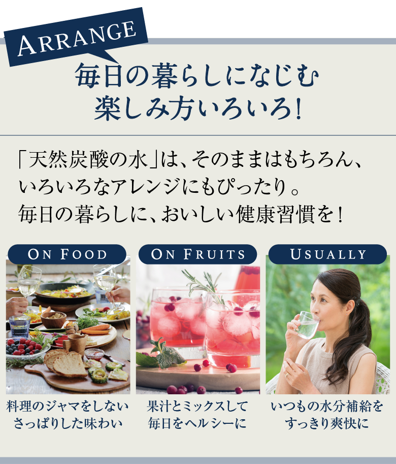

[硬度]
平均45mg/リットル（軟水）
[成分（100mlあたり）]
ナトリウム 1.3mg／マグネシウム 0.46mg
カルシウム 1.07mg／カリウム 0.29mg
平均45mg/リットル（軟水）
[成分（100mlあたり）]
ナトリウム 1.3mg／マグネシウム 0.46mg
カルシウム 1.07mg／カリウム 0.29mg
※自然のものであるため、季節により若干変動します。
さまざまな健康美効果がある炭酸水。その根本となるのが“めぐり”を整え、代謝をアップする働きにあります。炭酸水を飲むことで不要物を排出し、内側から若々しく。なかでも「天然炭酸の水」は、自然由来のミネラルを含んだ天然のヘルシーウォーターなのです。
自然豊かな奥会津金山の源泉から湧き出る、国内では極めて希少な「天然炭酸の水」。平均硬度45※の「軟水」に位置し、日本人の口に合うまろやかな味わいです。天然発泡ならではの繊細な微炭酸は口当たりがよく、極上の名水として明治時代に上流階級で愛飲されていたほどです。
※通常30～60（天然であるため、硬度は季節などに
より若干変動します）
福島県奥会津金山町、緑豊かな山々と澄み渡る空気のなか、こんこんと溢れ出る湧水が「天然炭酸の水」です。100年以上の昔から厳しい冬の寒さと幾重もの大地に磨かれてきた、天然の微炭酸。そのまろやかで繊細な味わいをお楽しみください。
源泉の清らかさを損なわないよう、徹底した衛生管理のもと、採水・ろ過処理を実施。外気に触れないままクリーンルームでボトリングしています。水質は外部機関による定期的な検査を実施。国の規定より厳しい基準の放射性物質検査もクリア。その高品質が認められ、G7伊勢志摩サミットでも各国首脳の喉を潤しました。
「天然炭酸の水」は、清廉な水と泡がしっかりと混ざり合う、極めてなめらかな炭酸です。自然発泡による微炭酸は、舌触りがよく、とてもまろやか。喉をスーッと通る飲みやすさと、食事の味を引き立てるクリアな味わいは、有名レストランでも卓上水として採用され、多くの方に愛飲いただいています。

-
ご愛飲者 S様
飲んだ瞬間、驚くほど口当たりがやわらかく、甘味を感じました。寝起きや寝る前にも飲みやすく、そのままはもちろん、いろいろなシロップやお酒と割ってもおいしく飲めます！日本人の口に合うやさしさを感じる炭酸水ですね。※個人の感想です。実感には個人差があります。
-

ご愛飲者 K様
初めは国産の炭酸水というのが珍しくて飲んでみました。特に意識はしていませんでしたが、ふとじんわり暖かいと感じたり、いつもより朝がスッキリしていたりと、もしかして炭酸水の効果なのかなと思い始めています。健康のために続けてみようと思います。※個人の感想です。実感には個人差があります。
-
ご愛飲者 あっくんママ様
もったいないと思いつつも、「天然炭酸の水」でご飯を炊いてみました。炊き上がりは想像以上！ツヤツヤもちもちなうえに、甘味が増してご飯だけでも食べられるおいしさでした。日本のお米と国産の炭酸水の相性はバッチリですね！※個人の感想です。実感には個人差があります。
-
鮨「三谷」 代表取締役 三谷 康彦氏
生ものは体温を下げてしまう食べ物。めぐりを促進しながら温度を保つ炭酸水は、鮨と一緒に飲むのに適していますね。おいしく食事を取りながら体の環境を整えてくれるので、私はお茶よりも炭酸水をおすすめしています。※個人の感想です。実感には個人差があります。